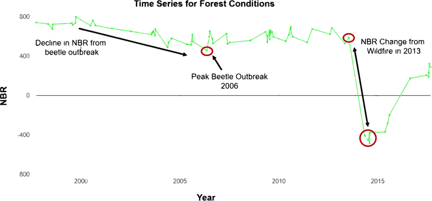

| Location |
British Columbia |
|
| Beetle Outbreak |
18 Million Hectares |
|
| Wildfire |
140,000 Hectares |

| Provincial Parks |
Beetle Outbreak |
Wildfire |
Sub-boreal forests cover vast areas in central interior British Columbia. Forests provide vital services across the region. The forests provide economic value in terms of timber harvest. They provide ecosystems services such as carbon sequestration and watershed management. Forests provide critical wildlife habitat for grizzly bears, caribou, wolverines and various bird species.
Lodgepole pine are dominant species in the forests of the central interior. Historically, forest life cycles are influenced by disturbance regimes of wildfire and beetle outbreaks. wildfire return is typically 100-150 year intervals. Wildfire results in tree mortality and forest initiation. It diversifies the landscape by creating early successional habitat. Beetle outbreaks kill off mature canopy trees and release understory species.
| Lodgepole Pine |
Spruce Hybrid |
White Spruce |
| Spruce |
Aspen |
Forest |
Mountain pine beetles are a natural part of forest ecosystems in western North America. Lodgepole pine trees are the primary host for mountain pine beetles. Warmer winters and and abundance of mature lodgepole pine trees have created ideal conditions for the eruption in beetle populations that have resulted in millions of hectares of tree mortality. Much of the tree mortality has been concentrated in central interior British Columbia.
| Low Mortality |
Moderate Mortality |
High Mortality |
| Forest |
Wildfires initiate new growth for lodgepole pine forests. These ecosystems are often reliant on wildfire to release fire cue seeds from cones in the canopy of lodgepole pine. Without wildfire, no growth is limited.
These landscape tend to be characterized by stand replacing fire, but even when much of the forest large patches of moderate to high severity fire still occur. This burn severity map shows the post-fire mosaic for three wildfire events.
Regeneration is critical to forest recovery, and the rate of tree regeneration is variable across the landscape. Post-fire early successional growth increases habitat and species biodiversity. The influx of herbaceous plants - fireweed and Geranium bicknellii attract humming birds, while increased insect activity attracts black backed woodpeckers. Lodgepole pine needs fire to release seeds. Wildfire breaths new life into the landscape after extensive mortality from beetle outbreak
Unchanged
Low recovery Rate
Moderate Recovery Rate
High Recovery Rate
Early successional composition and structure increase biodiveristy .
Created by Michael Cook and Anna Talucci From Oregon State University